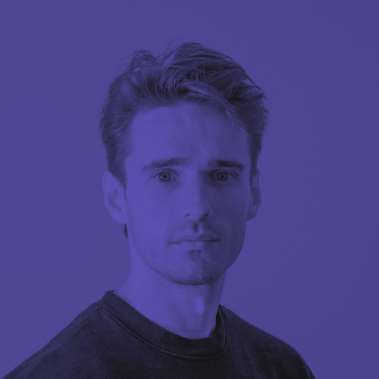

Raul Andrian
Catatan Raul
Hallo kenalin nama gue Raul Andrian biasa dipanggil Raul. gue ngampus di UMN, jurusan Informatika dan angkatan 2018.
kebetulan lagi dapet tugas belajar git dan github dari dosen kampus, jadi tugasnya itu berkelompok. kelompok terdiri dari 4 orang yaitu saya, fadla, sinzie, zaldi.